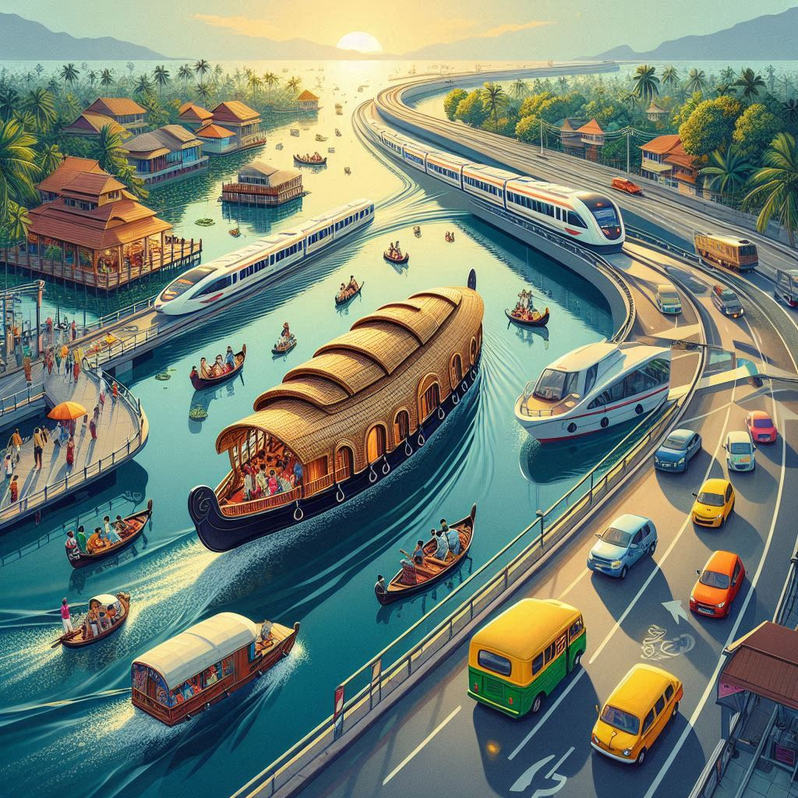
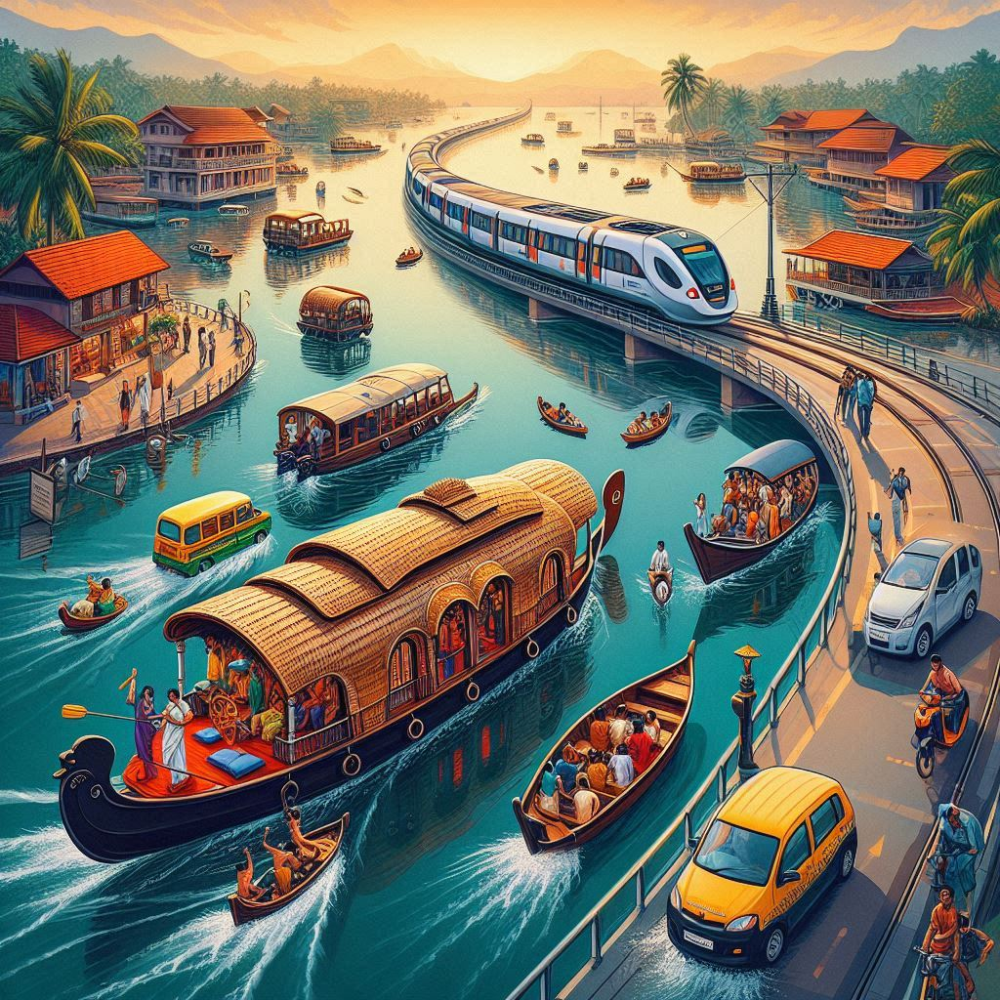

Transportation in Kerala is well-developed and diverse, offering multiple options for both locals and tourists to navigate the state. Due to its unique geography, comprising a long coastline, backwaters, mountains, and dense forests, the modes of transport in Kerala are tailored to the diverse landscape.
1. Road Transport:
- Buses: Kerala has an extensive network of public buses that connect cities, towns, and villages. The Kerala State Road Transport Corporation (KSRTC) operates a vast fleet, providing affordable and convenient travel within the state. Private buses also operate on many routes, offering more flexibility.
- Auto Rickshaws: In cities and towns, auto-rickshaws are a common mode of transport for short-distance travel. They are widely available and are a popular choice for local commutes.
- Taxis and Cabs: Taxis and private car rentals are widely available for travel within cities or for long-distance journeys. Apps like Ola and Uber are also operational in major cities like Kochi and Thiruvananthapuram, providing easy access to private transport.
2. Water Transport:
- Backwaters and Houseboats: One of Kerala’s unique transportation systems is the extensive network of backwaters, which is navigated using traditional houseboats. Houseboat cruises on the Vembanad Lake and other backwater regions like Alleppey and Kumarakom are major tourist attractions. These boats provide both a means of travel and an experience, offering views of Kerala's lush landscapes and village life.
- Ferries: Kerala has a well-organized ferry system connecting the mainland with islands and other coastal areas. Ferry services are available in major cities and towns like Kochi, Alappuzha, and Kozhikode. These ferries also serve as an affordable mode of transport for local residents living on the islands.
3. Rail Transport:
- Indian Railways: Kerala has a well-connected railway network that links it to the rest of India. The Indian Railways operates frequent trains to major cities like Thiruvananthapuram, Kochi, Kozhikode, and Kottayam, among others. The Konkan Railway runs along the coastal route, offering scenic journeys with views of the Arabian Sea. Train travel is popular for both long-distance and inter-city travel.
4. Air Transport:
- Airports: Kerala is served by three major international airports:
- Trivandrum International Airport (Thiruvananthapuram)
- Cochin International Airport (Nedumbassery)
- Calicut International Airport (Kozhikode)
- Domestic Airports: There are also smaller domestic airports serving regions like Kannur and Mangalore, improving connectivity to the state.
5. Two-Wheeler and Cycling:
- Motorbikes/Scooters: Due to the narrow lanes and often crowded streets, motorbikes and scooters are a popular mode of transport in Kerala. They are especially useful in congested urban areas and remote village routes.
- Bicycles: Kerala’s relatively flat terrain, especially in rural areas, makes cycling a practical and eco-friendly way of getting around. Bicycles are popular for short-distance travel and are commonly used by locals, particularly in rural regions.


6. Cable Car:
- Munnar: One of the few places in Kerala with a cable car system is Munnar, which is a popular hill station. The cable car ride offers stunning views of the tea gardens and the Western Ghats.
7. Air-conditioned and Luxury Travel:
- Luxury Travel: For a more luxurious travel experience, Kerala has several private tour operators offering air-conditioned buses, coaches, and luxury car rentals for tourists. Many also offer guided tours of Kerala’s scenic spots, including the backwaters, hill stations, and historical landmarks.
8. Local Transportation in Cities:
- Kochi Metro: The Kochi Metro is an important addition to Kerala’s urban transport infrastructure. It connects key areas of Kochi, reducing road congestion and providing a fast, reliable transport option.
- Rickshaws: In many cities, cycle rickshaws and electric rickshaws are used for short-distance travel, providing an eco-friendly option for commuters.
9. Traditional Transportation:
- Bullock Carts: In rural areas, bullock carts are still used for transporting goods, especially in farming regions. This traditional mode of transport reflects the agrarian culture of Kerala.
Conclusion:
Kerala’s transportation system is diverse and well-suited to its unique geography. From the modern comforts of the Kochi Metro and luxury buses to the timeless charm of houseboats navigating the tranquil backwaters, Kerala offers a wide range of transport options for both locals and tourists.